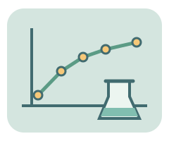

提出問題・保留資料・檢查結論
科學實驗室
不是猜標準答案，而是自己改變條件、留下紀錄，
再看看資料支持什麼。

本頁是簡化數學模型，不是真實儀器或實測資料。相同條件會得到相同結果；模型成立的條件寫在每個實驗裡。
生活中的科學重點
模型條件與參考資料
查看本模型參考資料 ↗1. 設定條件，再預測
圖形輔助理解，不是真實儀器或精確比例尺。改變參數後請重新預測。
尚未執行模型。
2. 檢視與比較
執行後會顯示模型輸出。
至少需要兩筆不同紀錄。
模型輸出圖
3. 模型紀錄表
紀錄只留在這個分頁；重新整理即清空，不儲存或上傳。下載CSV由你自行保留。